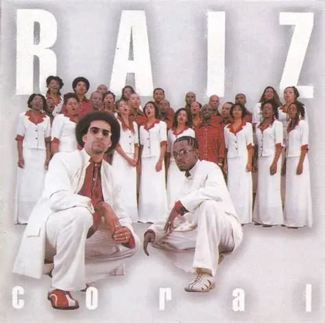

Raiz Coral
Coral Gospel formado em São Paulo

Sobre os primeiros passos do grupo
O Raiz Coral foi um grupo vocal de música cristã contemporânea brasileira, fundado em março de 2000 por Sergio Saas e Scooby .
O primeiro disco, Pra Louvar, foi lançado em 2004 e recebeu destaque imediato entre o público evangélico.
O primeiro disco ao vivo do grupo, Vencedor, foi o último título gravado pelo conjunto.
O primeiro disco ao vivo do grupo, Vencedor, foi o último título gravado pelo conjunto. Após ele, Sergio Saas seguiu carreira solo e Scooby conduziu projetos com outros músicos do cenário evangélico, especialmente Davi Sacer. Em 2015 a Mess Entretenimento lançou a coletânea As Melhores Canções do Raiz Coral, encerrando a discografia da banda.
Informção tirada do Wikipédia
Curiosidades do Grupo
Após o fim do grupo, a gravadora Mess Entretenimento lançou a coletânea As Melhores Canções do Raiz Coral em 2015. Raiz Coral, um grupo muito amado pelos fãs em diversas regioes do Brasil, hoje em dia os antigos membros seguem suas carreiras independentes.
Informção tirada do Wikipédia

Mais Informçoes
Você pode ouvir a coletânea de melhores musicas clicando aqui